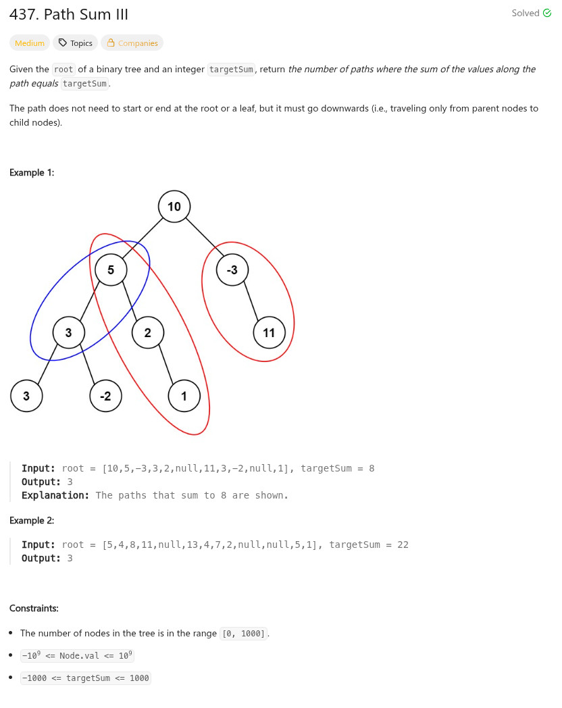

參考資訊：
https://www.cnblogs.com/grandyang/p/6007336.html
題目：

/**
* Definition for a binary tree node.
* struct TreeNode {
* int val;
* struct TreeNode *left;
* struct TreeNode *right;
* };
*/
int travel(struct TreeNode *n, int *s_buf, int *s_idx, int *cnt, long sum, int target)
{
long cc = 0;
long tmp = 0;
if (!n) {
return 0;
}
sum += n->val;
if (sum == target) {
(*cnt) += 1;
}
tmp = sum;
s_buf[*s_idx] = n->val;
for (cc = 0; cc < *s_idx; cc++) {
tmp -= s_buf[cc];
if (tmp == target) {
(*cnt) += 1;
}
}
(*s_idx) += 1;
travel(n->left, s_buf, s_idx, cnt, sum, target);
travel(n->right, s_buf, s_idx, cnt, sum, target);
(*s_idx) -= 1;
return 0;
}
int pathSum(struct TreeNode *root, int targetSum)
{
int r = 0;
int idx = 0;
int buf[1001] = { 0 };
travel(root, buf, &idx, &r, 0, targetSum);
return r;
}